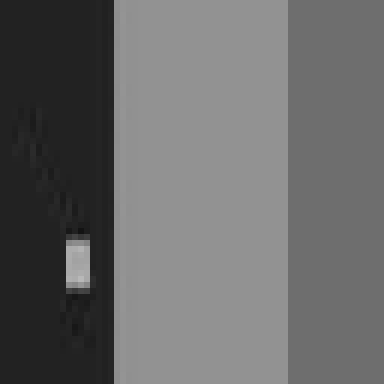

Soft Telecine marked progressive film frames as fields
Outcome: fixed. The source marking ({{#SET_FIELD_BASED}}) stamped
_FieldBased=2 on every job with deinterlacing on, including Soft Telecine. Soft Telecine's
method is a bare vivtc.VDecimate, which copies the property through. QTGMC, Bwdif and VFM
all reset it. Every later zimg resize therefore resampled each progressive film frame's 4:2:0 chroma as two
fields. That covers the Color Format conversion, ProRes/v210's fixed format, Crop & Resize, the BT.709 conversion,
the AI upscalers' RGB conversion and DeScratch's internal blur. At a film-rate source there was no VDecimate at all,
and the marking stayed too. So did the preview, which has no Soft Telecine block.
ScriptGenerator::field_based_for, the one derivation both scripts use, now returns
None for Soft Telecine, so neither script marks those frames. The fix covers the encode, the preview and the
film-rate case, and adds no new SetFieldBased call. VDecimate does not read the property (section 1), so
it keeps exactly the same frames.
This changes the output of every Soft Telecine job that resizes or converts format. Every measurement below says the change is toward the correct picture: chroma is 4–11 dB closer to ground truth, and the 4:2:2 encode now equals a progressive conversion to 0.05 levels.
1. VDecimate ignores _FieldBased
soft_telecine_dvd.mkv decoded as the worker decodes it (150 frames at 29.97), marked 2 or 0, then
VDecimate with its defaults:
| Depth | Frames out (2 / 0) | Identical frames | _FieldBased after VDecimate |
|---|---|---|---|
| 8-bit | 120 / 120 | 120 / 120 | 2 |
| 10-bit | 120 / 120 | 120 / 120 | 2 |
So not marking the clip cannot change which frames are dropped, and the marking survives into everything after.
2. What the marking did to the fixture
The 120 film frames converted 4:2:0 → 4:2:2 with resize.Bicubic (the Color Format block's call), marked 2
vs unmarked:
| Plane | Mean |difference| (8-bit levels) | Max |
|---|---|---|
| Y | 0.000 | 0 |
| U | 2.334 | 193 |
| V | 2.669 | 185 |
Round trip 4:2:0 → 4:2:2 → 4:2:0 (the way back progressive), chroma against the source:
| Up-conversion | U | V |
|---|---|---|
| marked 2 (before) | 2.152 | 2.463 |
| unmarked (now) | 0.880 | 1.001 |

V plane of film frame 30, a 64×64 crop at chroma (40, 70), enlarged 6× with nearest neighbour. Left: the source's 4:2:0 chroma, each row doubled. Middle: 4:2:2 converted while marked TFF; the small coloured block has alternating light and dark rows, because each field was interpolated from its own rows. Right: converted progressively (now).
3. Against ground truth
The fixture only shows that the two conversions differ. For an absolute answer, two pictures with full vertical chroma were brought down to 4:2:0 progressively and back up to 4:2:2, marked 2 vs unmarked, and compared with the original:
| Picture | Marked 2: U / V PSNR | Unmarked: U / V PSNR |
|---|---|---|
Top fields of interlaced_test.avi (real VHS, 720×288 4:2:2, 24) | 44.30 / 47.49 dB | 48.70 / 50.05 dB |
testsrc2 rendered at 4:2:2 (720×480, 24) | 36.63 / 32.64 dB | 47.11 / 43.28 dB |
Limits: one kernel (bicubic, b = c = 1/3, the templates' kernel) and a progressive Bicubic downsample. Ground truth here is itself a 4:2:2 picture, not a 4:4:4 one. The comparison is between two up-conversions of the same 4:2:0 data, so it measures what the marking costs, not how good bicubic chroma upsampling is.
4. The worker's encodes, before and after
From app/test/integration_soft_telecine_field_based_test.dart (heavy). Two lossless FFV1 encodes of the
same Soft Telecine job, Color Format Match source (4:2:0) and 4:2:2 8-bit, give the same
120 frames. The 4:2:2 output is compared with ffmpeg's zscale=filter=bicubic progressive conversion of the
4:2:0 output, which uses the same zimg kernel. "Before" is the worker built from 7ef3a99.
| Measurement | Before | Now |
|---|---|---|
| 4:2:2 encode vs progressive conversion, chroma MAD | 2.505 | 0.049 |
| Preview, frame 40: 4:2:2 conversion vs none, RGB MAD | 2.848 | 1.082 |
ProRes HQ / MOV: fiel atom, ffprobe field_order, frames | progressive, 120 | progressive, 120 |
The remaining 0.049 is the conversion's error-diffusion dither (the script's) against zscale's none. The preview row
compares a converted frame with an unconverted one, so its floor is the chroma kernel's own effect, not zero. The test
also computes an ffmpeg per-field reference (separatefields,zscale,weave) only to show that the fixture tells
the two apart (3.6 levels from the progressive one). It does not reproduce the old script exactly: the old encode
was 4.8 levels from it, because the two place field chroma differently.
5. Field-order flags: already right, unchanged
The task suggested that output_field_order might report a Soft Telecine output as interlaced. It did not:
it starts from still_interlaced_tff, which is None whenever deinterlacing is on, and Soft Telecine
is a deinterlace method. So field_order_args wrote no -top, +ildct or
tff=1 before the fix either; the ProRes row above passes on both workers. test_244 now sweeps
every codec to keep it that way.
What changed
ScriptGenerator::field_based_for:Nonefor Soft Telecine. Its other users are unaffected.still_interlaced_tff,output_field_order, Deblock's per-field path, the border field alignment and crop detection already treat deinterlaced jobs as progressive. SangNom already marks them 0. mpeg2stinx's field order falls back to TFF, which was Soft Telecine's default anyway. DeScratch's internal blur now runs progressively on film frames, which is correct for film. Task #29's finding that field-aware analysis removed more scratch was made on a genuinely interlaced capture.- Tests:
test_244_soft_telecine_frames_are_progressive(both scripts at 29.97 and 23.976, everytff, Color Format and ProRes; no field-order flags or note for any codec; the other methods keep their order), a script assertion inintegration_filter_parameters_test.dart(push gate), and the heavyintegration_soft_telecine_field_based_test.dart.test_244and both encode assertions fail on the previous worker.
Not tested
- A real film DVD beyond the committed fixture. The fixture is MPEG-2 with soft pulldown flags, like a DVD.
- Platforms other than macOS arm64. The change is in script generation; the nightly heavy run covers the others.
Reproduce
SCRATCH=/some/scratch/dir DEPS=deps/macos-arm64 [BEFORE=1] docs/reports/issue-33-soft-telecine-field-based/scripts/reproduce.sh
probe.py (sections 1–3 and the crops) reads raw frames that reproduce.sh makes with ffmpeg from
the committed fixtures, so it needs no source plugin and no NumPy. The script then runs the heavy test.
BEFORE=1 also runs it against the worker built from 7ef3a99, in a scratch worktree.